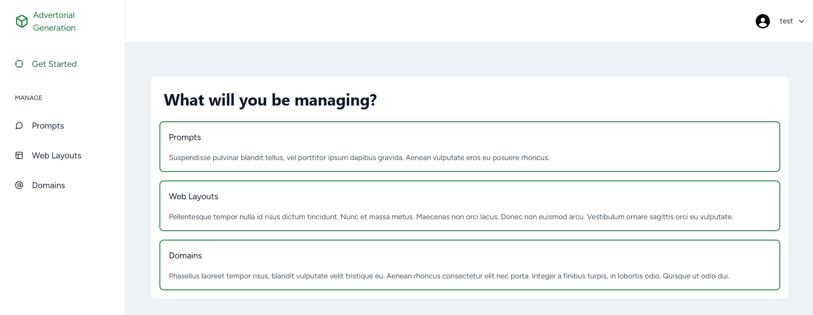

AI Content Systems
React
Node.js
OpenAI API
Advertorial Generation Engine
Helped develop an AI-powered advertorial generation engine inside a React and Node.js platform to streamline campaign creation, reduce repetitive manual work, and support faster content production.
Challenge
Manual campaign content creation made scaling slower and more operationally expensive.
Solution
Integrated AI-assisted generation directly into the workflow so teams could create and iterate faster.
Outcome
Improved campaign throughput, content velocity, and operator efficiency.